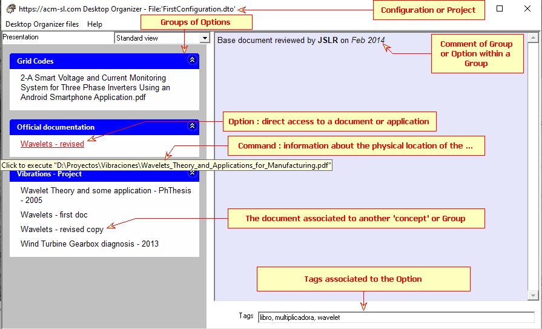
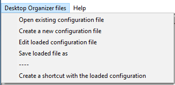
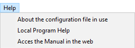
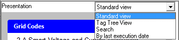
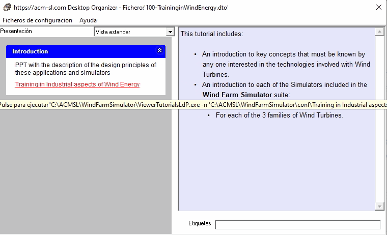
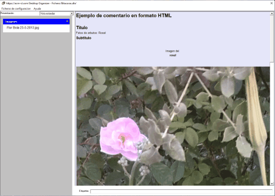

The next figure shows the main form and its components:

- The form caption shows the name of the "configuration file" that is being used.
- The main menu has two entries:
- Desktop Organizer files, shown below, with options explained below.

- Help, shown below, that provides information about the configuration file, and two helps: one local and another through Internet.

- The body of the main form is divided vertically in two parts:
- In the upper left is the Presentation selection box, which allows the selection of the View.

- On the left side below is a panel, whose content changes depending on the active View. In the Standard View the available Options are presented, grouped into Groups.
- On the right side is the Comment panel: it shows the comment associated with the Option or the Group indicated by the mouse in the left panel. See examples in the following figures.


- On the right side below is the text box where the Tags associated with the Option in the left panel on where the mouse is located
Related Topics:
User's Guide
User's Guide